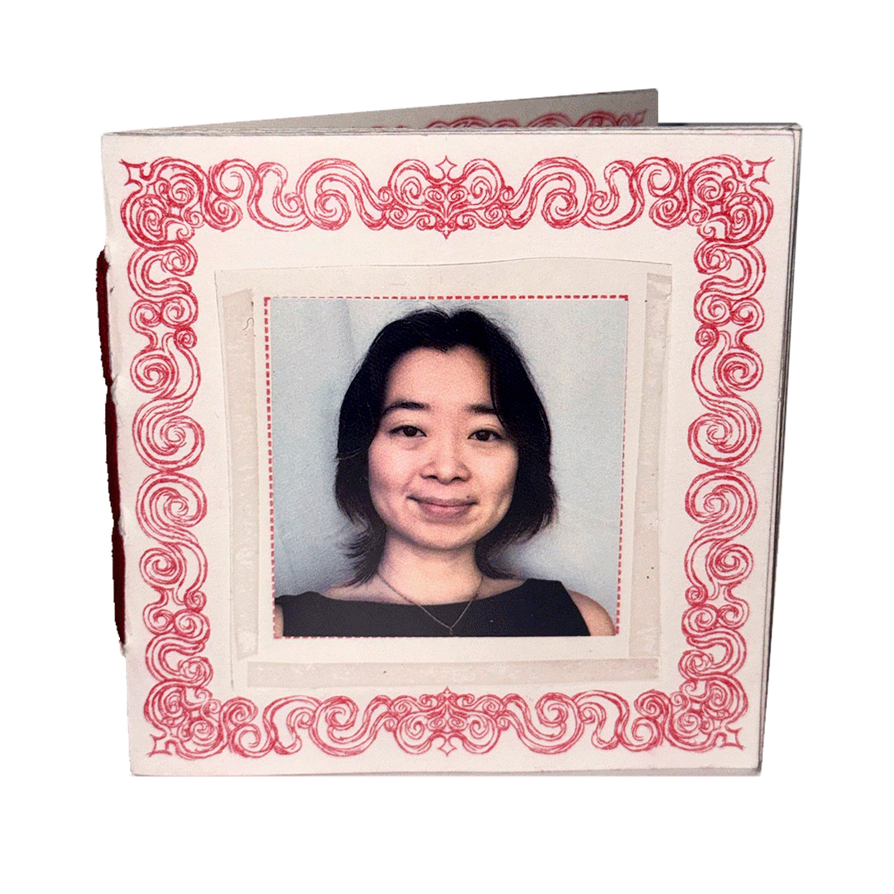
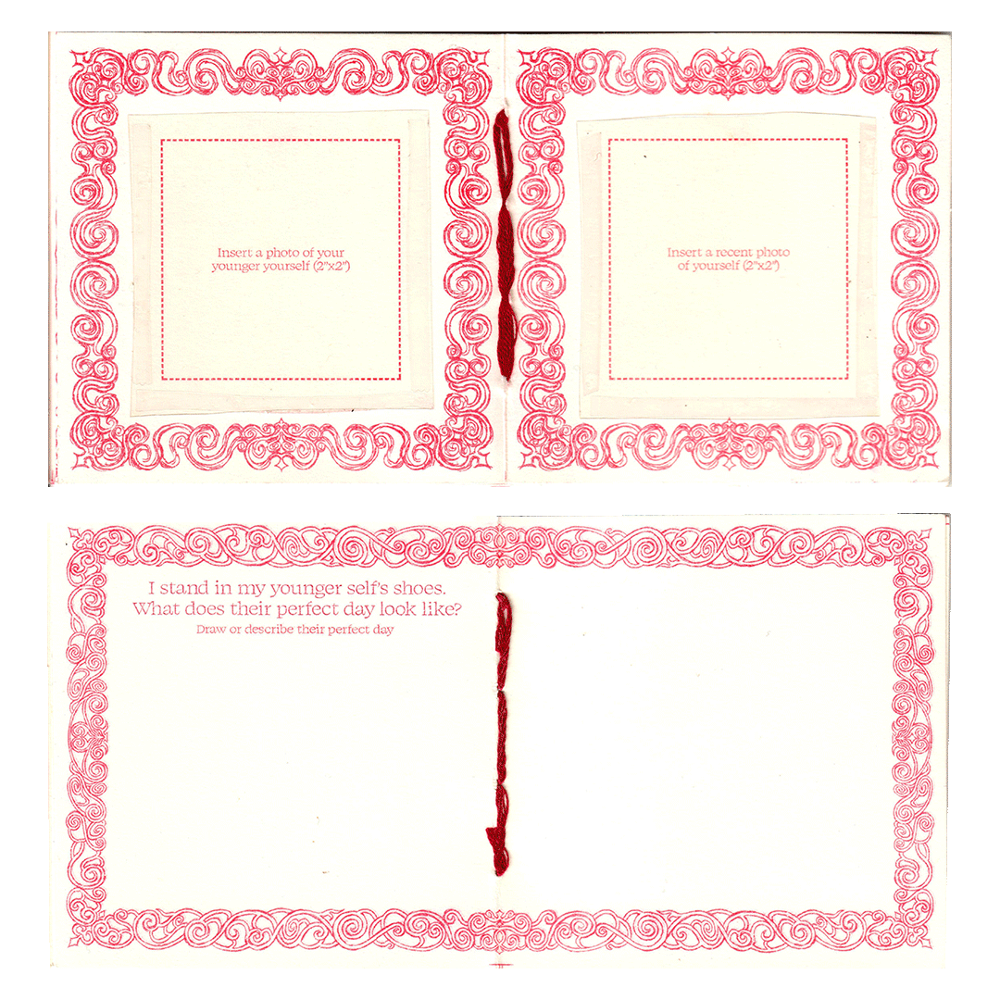
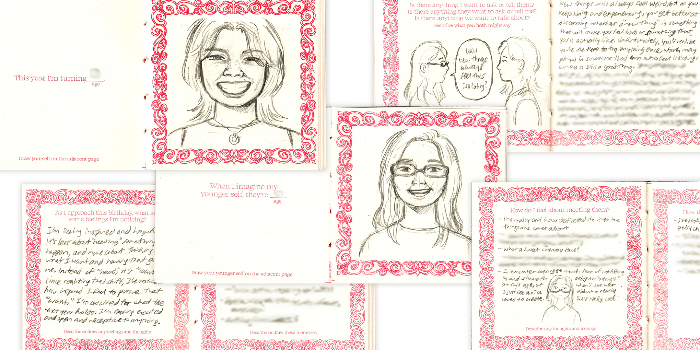
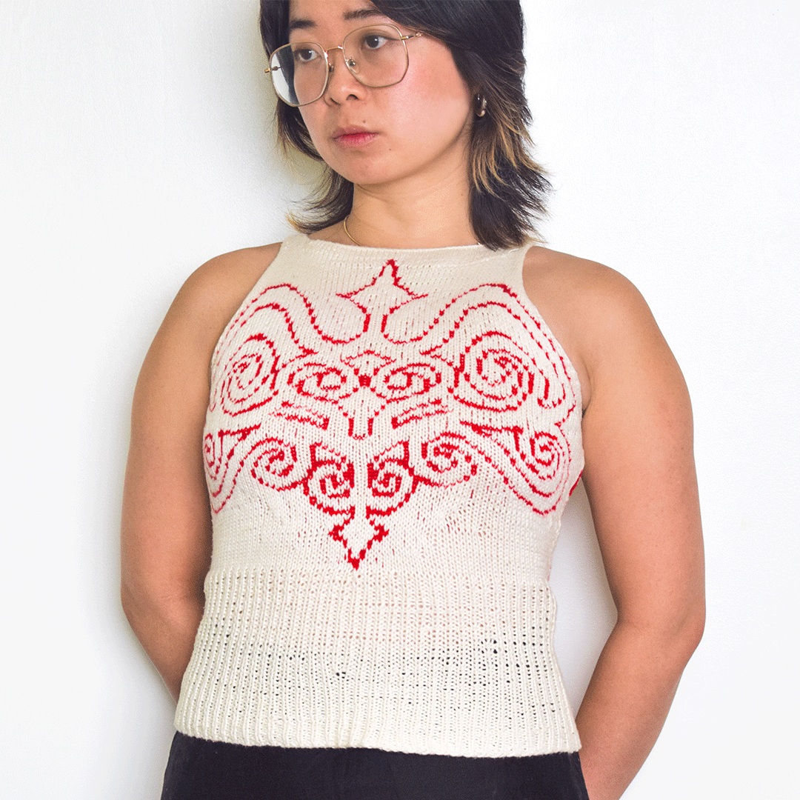
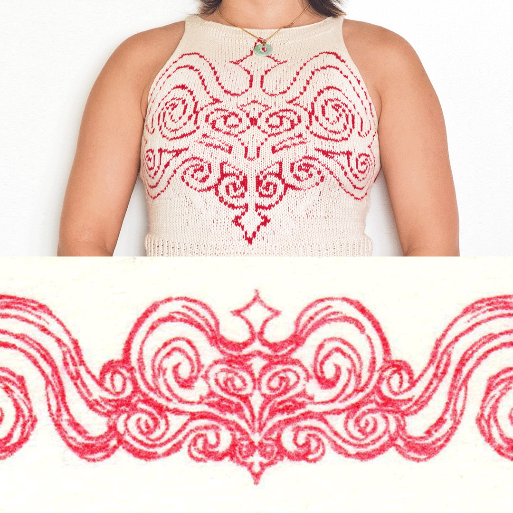
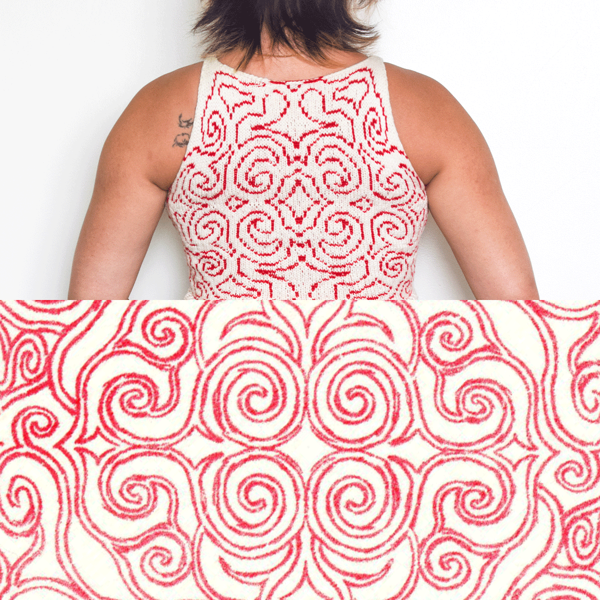
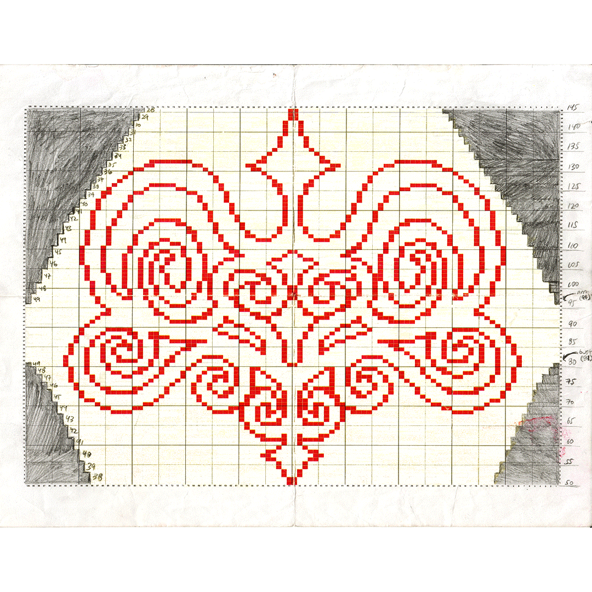
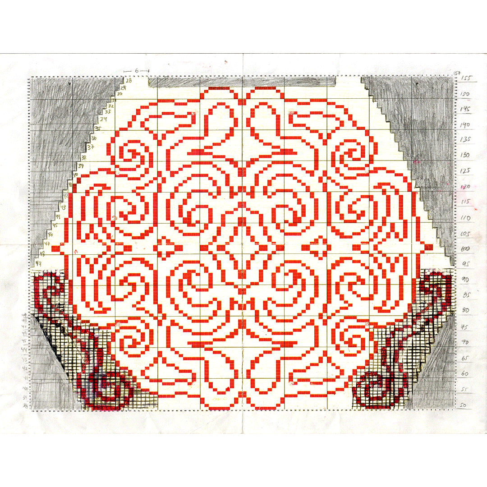

Two-color risograph zine (bright red and raspberry), self-published at the SVA RisoLAB, 2026
It's Still You! is an interactive zine about connecting with your younger self. As I get older (and sappier), I regularly check in on how things are feeling throughout the year—usually at the beginning and end of the year, and on my birthday. This time, I wanted to make something to not only look back on the past year, but also see if there's anything in earlier years that might want reflection.
It's Still You! is designed to be filled out and drawn in, where the exercises at the beginning of the zine invite the reader to focus on recent feelings and memories over the past year. Then halfway through the book, the exercises ask the reader to stand in their younger self's shoes to facilitate an interaction between their present and past selves. In addition to the reflections, the reader can insert a recent photo of themselves and a photo of their younger self in the cover sleeves, referencing the conversation happening within the pages. The zine was entirely chain-stitched by hand, and the plastic photo sleeves on the covers were also cut and taped by hand.



White and red cotton/modal blend yarn on 3.5mm needles, 2026
Using the patterns I designed for the zine, I knint a top as an extension of this reflective exercise. If the zine is the direct conversation between the past and present selves, the wearable knit garment is the indirect, but perpetual connection between the two. Huge thank you to my friend Jules Tong for teaching me how to knit and answering all of my questions.




